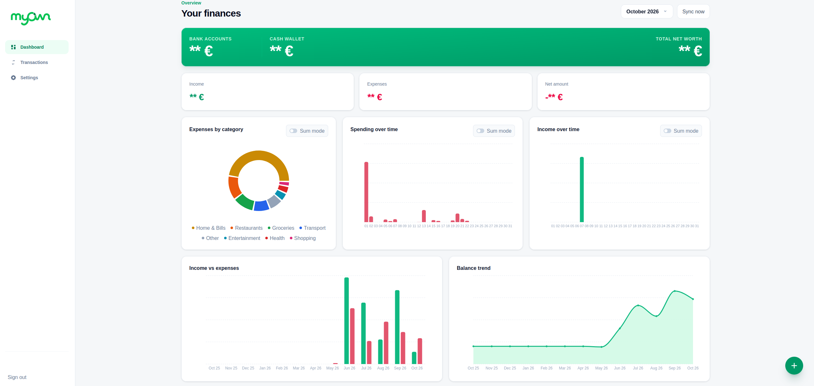
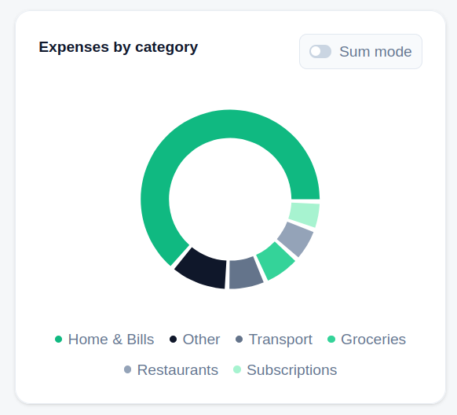
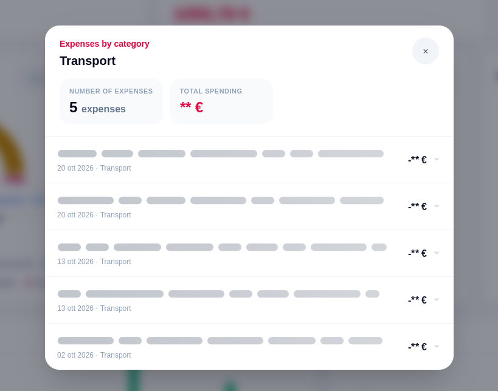
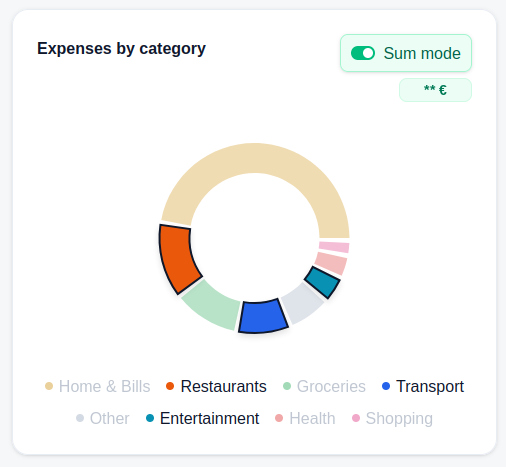
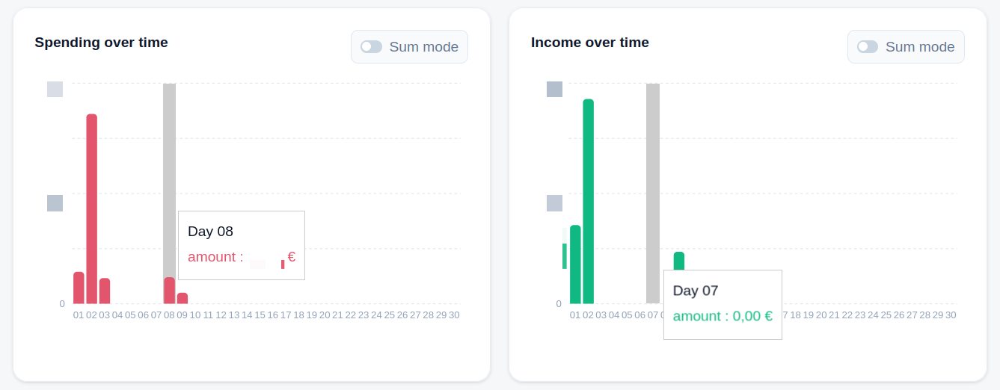
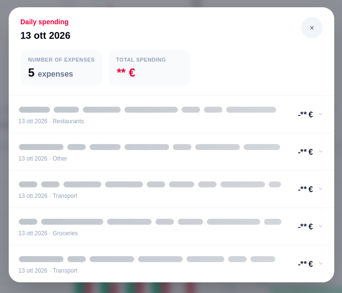
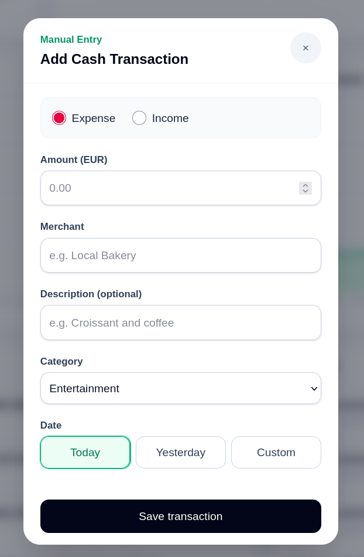

During the past years I tried several personal finance solutions, trying to keep trace of my spendings and my persona ownings, but none of them matched my taste or my workflow 100%. They either required too much manual work (like inserting manually every single expense done) or forced me into their rigid budgeting systems or visualization styles. The idea of building something that was tailored to my needs has been in my mind for a while, but I never really seeked how to do so, i just had some fancy solution (like find a way to intercept notification from my bank and parse them to extract the information I needed, pretty stupid I know :P).
But finally one day i found the time to really think about it, and i discovered that the solution was much easier than what I thought, since there is a service called Enable Banking that allows to connect to my bank account and retrieve all the transactions in a structured way, so I can just focus on building the application. Before showing the result of my work, I want to mention a few things:
First of all, let me show you the main features of the application, then I'll keep explaining the technical details of how I built it. The core of the application is the dashboard. I wanted an immediate, high-level overview the moment I open the app: total balance, monthly income, and expenses at a glance. Moreover, I decided to keep separate digital and cash transaction, so that everytime I can see how much money I have in my bank account and how much cash I have in my wallet, and so that I can keep track of my cash expenses as well.

I integrated Enable Banking (Open Banking PSD2) to directly connect my bank account. Every night at 5:00 AM, an automatic trigger syncs my latest transactions to a Supabase database. No more manual exports! (Of course, I can also trigger a manual sync at any time if I want to see the latest transactions immediately.)
To understand where my money goes, I combine deterministic rules with AI. Merchant names and transaction descriptions are first normalized with regular expressions, removing differences in case, accents, and punctuation. The app then checks saved merchant rules, custom keywords, and common phrases, such as recurring supermarket names or salary descriptions.
Only transactions that remain unmatched are sent to Groq, in batches rather than one API call per payment. I can also correct a category and save that choice as a merchant rule for future transactions. Familiar payments therefore need no model call, keeping external requests limited to the cases where AI is useful.


The categorization views let me easily drill down into specific spending areas.
I can also activate Sum mode and select several categories to immediately see their combined spending. This makes it easy to check how much different spending areas add up to, without having to calculate the total myself.

Reading a list of numbers doesn't trigger the same immediate realization as seeing a visual trend. I specifically designed the app around powerful charts (using Recharts) to track my daily spending.
Seeing a spike on a bar chart instantly tells me if I went over budget during a weekend trip or if my daily expenses are creeping up. It turns raw data into actionable behavior changes.


I introduced other charts that allows me to keep track of my belonging duting time. A Income vs Expenses chart compares money coming in and going out each month, making it easy to see which months I spent more than I earned. A Balance Trend chart reconstructs how my total balance changed over the same period, using the latest known balance and recorded transactions. Together, they show both monthly cash flow and its longer-term effect on the funds I have available.
Cash expenses and other transactions that do not come from the bank can be added manually. They appear alongside imported transactions in the category and reporting views, keeping digital and cash activity together in the dashboard.

MyOwn is built with Next.js and TypeScript, with Supabase handling PostgreSQL storage and authentication, Enable Banking supplying transaction data, and Recharts powering the visualizations. Banking synchronization runs on the server: it normalizes incoming records, prevents duplicate imports, and applies the categorization pipeline before saving them.
Even though I host and use the app myself, it handles real banking data, so security was part of the design from the start. Access is restricted to my account and requires two-factor authentication. Row-level security protects financial records at the database layer, input is validated on the server, and banking credentials and privileged API keys stay out of the browser. The scheduled synchronization endpoint is also protected by a secret.